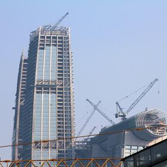
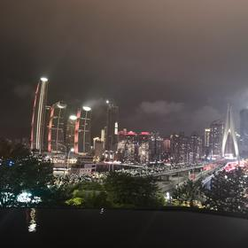

08:00🏨 อาหารเช้า + เช็กเอาต์1 ชม.
เก็บของให้เรียบร้อย วันนี้ลงเขา
🚐 รถสายเฉพาะลงเขา·14 กม.·50 น.
09:15🚗 รถลงไปสถานี Wulong South50 น.
ลงเขา 14 กิโลเมตรกลับสถานีรถไฟ
🚄 รถไฟความเร็วสูงกลับ·~110 กม.·34 น.

10:40🚆 รถไฟกลับฉงชิ่ง34 น.
กลับเข้า Chongqing East · ตั๋วขากลับจองพร้อมขาไปตั้งแต่ 14 ธ.ค.
🚇 Metro สาย 6 กลับเจี่ยฟ่างเปย·21 กม.·50 น.
11:40🚆 Metro กลับที่พัก รับกระเป๋า1 ชม.
เช็กอินห้องใหม่และรับกระเป๋าใหญ่ที่ฝากไว้
🚶 เดินจากที่พัก·0.3 กม.·5 น.
13:00🍽️ กลางวัน1 ชม.
ร้านในห้างแถวเจี่ยฟ่างเปย
🚶 เดินไปปลายคาบสมุทร·1.1 กม.·18 น.

14:30🏔️ Raffles City จุดชมวิว 250 เมตร2 ชม.
ตึกแฝด 8 หลังที่ปลายคาบสมุทร มีสะพานลอยฟ้ากระจกเชื่อมยอดตึกที่ความสูง 250 เมตร มองเห็นจุดบรรจบของแม่น้ำแยงซีกับเจียหลิงเต็มตา ตั๋ว ¥120 เปิด 10:00–22:00 · ขึ้นช่วงบ่ายแก่จะได้เห็นทั้งตอนสว่างและตอนไฟเมืองติด
📸 จุดถ่ายรูป: จากสะพานกระจก 250 เมตร เห็นจุดบรรจบแม่น้ำแยงซีกับเจียหลิงชัดที่สุด
🚶 เดินกลับที่พัก·1.1 กม.·18 น.
17:00🏨 พักที่ที่พัก2 ชม.
พักขาก่อนคืนยาว · คืนนี้คนเยอะมาก พักให้เต็มที่
🚶 เดินไปร้าน·0.5 กม.·9 น.
19:00🍽️ มื้อค่ำส่งท้ายปี2 ชม. 30 น.
จองร้านไว้ล่วงหน้า คืนส่งท้ายปีร้านดังเต็มทุกที่ · หม้อไฟร้านใหญ่หรือร้านอาหารเสฉวนแบบนั่งโต๊ะ
🚶 เดินเข้าลานอนุสาวรีย์·0.4 กม.·10 น. (คนเยอะ)

22:00🏔️ นับถอยหลังที่เจี่ยฟ่างเปย2 ชม. 30 น.
ลานหน้าอนุสาวรีย์ปลดแอกเป็นจุดรวมคนนับถอยหลังของเมือง จอ LED รอบตึกนับถอยหลังพร้อมกัน ไปถึงก่อน 22:30 หลังจากนั้นเดินเข้าลานแทบไม่ได้ · ถ้าไม่อยากเบียด ดูจากดาดฟ้าโรงแรมหรือฝั่ง Nan'an ก็เห็นไฟทั้งเมือง
📸 จุดถ่ายรูป: จอ LED รอบลานนับถอยหลังพร้อมกันตอนเที่ยงคืน